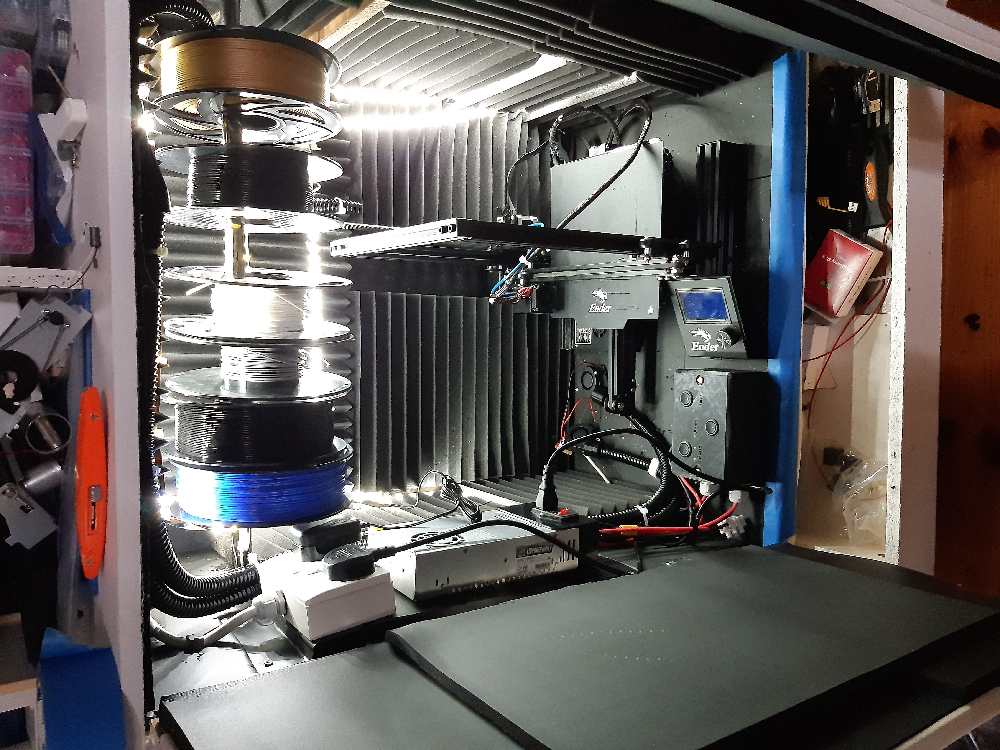

I have constructed a sound dampening cupboard with air extraction so that I can have my 3D printer in the house without the noise or smell.
I used to keep my 3D printer in the garage where it was exposed to drafts and bumps. Previously, as a student, I kept it inside a wardrobe in the house which helped dampen sound. When some furniture was replaced, I used an old wardrobe as the base for this cupboard.
This cupboard was built on a very slim budget using mostly leftover materials. With more funding, I would have chosen denser wood than chipboard. The cupboard includes a drawer for printer-related items and a clothes rail to hang filament. I used 20mm copex tubing from a previous project for the exhaust piping.
Some specs are subjective, so your results may vary!
I originally planned to use old gardening kneeling mats but wanted better sound reduction. I bought sound dampening mats designed for classic car dashboards, sound absorbing foam, and sticky door seals. I glued the foam onto the mats inside the cupboard using carpet adhesive, making it much quieter. I did not measure decibel levels but was satisfied with the result.
I had blower fans from a previous project rated at 18 CFM (30.6 m³/h). The cupboard volume is approximately 0.2484 m³, so one fan can replace the air roughly every 29 seconds.
I connected two 12V fans in series powered by the printer’s 24V supply. The current draw per fan is 220mA, so I fused the circuit at 250mA. This setup replaces the air every 14 seconds, allowing for some loss due to tubing pressure.
I modeled a coupler in Fusion 360 to connect the blower to the copex tubing and 3D printed a manifold to merge two copex outputs into one. The exhaust tubing extends through a window to vent air outside.
The printer was placed sideways in the cupboard, so I removed its power supply and mounted it externally on a metal bracket made from a dishwasher carcass scrap. This prevents screwing the power supply directly to chipboard and acts as a heatsink.
The bracket holds a double socket and the printer power supply, wired with 2.5mm² flex and fused at 13A. I extended the printer cable using XT60 connectors so the printer can be easily reassembled later. Additional XT60 sockets and wiring were added for fans and lights, controlled by panel-mounted switches with the panel designed in Fusion 360 and printed in PLA.

These are future considerations; the current setup meets my needs.